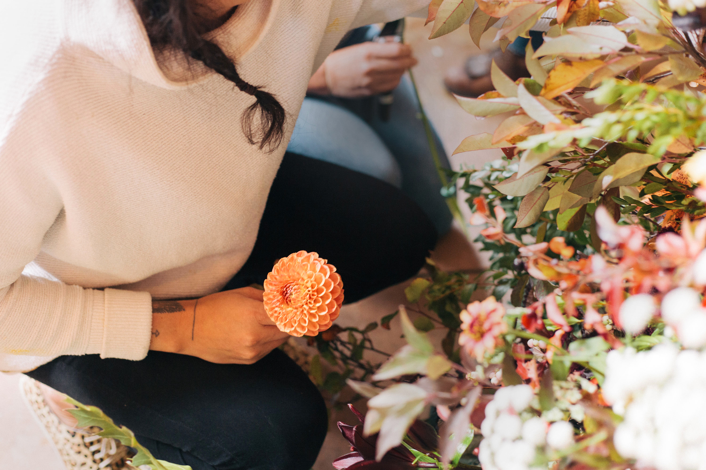

about
Welcome to Poppy Flower Works!
We are dedicated to crafting unique arrangements and designs using locally sourced, ethically grown flowers for weddings, events, and everyday settings. With a commitment to organic and biodynamic farming practices, we use seasonal flora to promote ecological sustainability. Our offerings feature flowers grown on our Southern Alberta landscape-integrated flower farms located in Canmore and Medicine Hat.
Join us in celebrating the beauty of nature with our lovingly crafted floral arrangements.
portfolio
Step into Poppy's enchanting world of sustainable floral design! We invite you to browse through our portfolio of whimsical blooms and witness the artistry and skill that goes into each arrangement. From locally sourced, seasonally appropriate flowers to eco-friendly practices, we're dedicated to creating stunning, sustainable floral designs for your special day.


weddings
Thank you for considering Poppy Flower Works for your special day. We're thrilled to collaborate with you to design the perfect floral arrangements that reflect your vision and values. Our team is committed to using locally sourced, seasonally appropriate flowers that are both beautiful and ecologically sustainable.
We offer complimentary consultations to discuss your needs and preferences. Our price list, which is provided below, serves as a helpful guideline, but keep in mind that each wedding is unique and we offer customized arrangements. While we may not be able to provide exact photo examples of your desired arrangements, we welcome you to browse our Instagram page for inspiration.
Please note that we only book one wedding per weekend, ensuring that you receive our undivided attention and exceptional service. To secure your date, we require a signed contract and a 25% deposit of the total quote. The outstanding balance is due two weeks prior to the event.
If you want to learn more or schedule a consultation, please fill out the contact form below, or send an email to robyn@poppyflowerworks.com. We look forward to hearing from you!
price list
Minimum spend $1500.
Minimum is exclusive of service fees, delivery fees and taxes.
Canmore Delivery is free for the first stop and each additional stop will be $50.
Out of town delivery starts at $100.
Canmore pick up available.
Bookings made within 1 month of your wedding will include a $100 late fee.
Weddings taking place on a holiday, will incur a $100 service fee.
Bridal Bouquet
$225 average
Bridesmaid Bouquet
$125 average
Boutonniere
$25 average
Corsage
$35 average
Flower Crown
$175 average
Short Centerpiece
$60 average
Tall Centerpiece
$100 average
Mixed Greenery Garland
$25/ft average
Ceremony Arrangements
$250 average
Arbour Arrangements Arrangements
$250 average
Fine Print
Our quotes are subject to change up to 6 weeks prior to your wedding day, to reflect current market prices and specific arrangement requests. At Poppy Flower Works, we pride ourselves on growing most of our own products here in Canmore, but if needed, we supplement with locally sourced products from within Canada. Please note that we cannot guarantee specific bloom choices and reserve the right to switch products if necessary due to poor quality, colour or size variations. However, we will always make substitutions of similar quality to ensure the best possible outcome for your wedding day.
For quality control and availability reasons, we require that Poppy Flower Works be the sole provider of all flowers at your wedding. If we are creating a larger-scale installation piece for your wedding, there may be additional setup and striking fees charged. Please note that additional charges will also apply for holiday delivery and installation.
We are more than happy to create mock-ups for a fee to ensure that we are both on the same page about the final product. Once we have created your custom quote and you are satisfied, we will send you a contract to be signed and returned. In order to secure your date, we require a signed contract and a deposit of 25% of your quote total. Your outstanding balance is due two weeks prior to your event. Please note that all deposits are non-refundable. We accept deposits through email money transfers (within Canada) or credit card payments.
At Poppy Flower Works, we are committed to providing you with the best possible experience and service for your special day. We look forward to working with you to create beautiful, sustainable and unique florals that reflect your vision and style.
my story
My name is Robyn Buzzee, and I am the florist and flower farmer behind Poppy Flower Works. I grew up in Canmore, nestled in the picturesque Bow Valley. Being raised in such an inspiring landscape developed an early appreciation for aesthetics and ecology, which has only grown throughout my journey.
I started my career in floristry in my early twenties, working my way up to managing the floral department at a corporate grocery store. However, my tenure there also exposed me to the darker side of the industry. The flowers were imported from overseas and treated with toxic farming practices to increase yield, and preservatives were used to keep them looking fresh during transportation. This made me realize that the mainstream floral industry was not taking care of its communities, flowers, or the environment at large.
This realization led me to pursue my passion for gardening and cultivate my own flower farm, where I tend to them using organic and bio-dynamic processes. Gardening has become a site of active resistance against the toxic practices found in the floral industry, and it is a cultivation of my values.
After obtaining a fine arts diploma from Capilano University and a Bachelor of Fine Arts in Drawing from the Alberta College of Art and Design, I decided to start Poppy Flowerworks. My love for ecology and aesthetics guides my work, and I offer ecologically conscious and responsible arrangements and designs to our local community.
Now, as a mother, I am even more motivated to model my values through my work and pass them on to my daughter. I believe it is important that the floral industry shifts towards ecological sustainability through local, organic, and compostable practices, and I am proud to be part of this small but meaningful change.
I hope to continue growing and learning as a florist and flower farmer and to inspire others to support sustainable floristry practices.